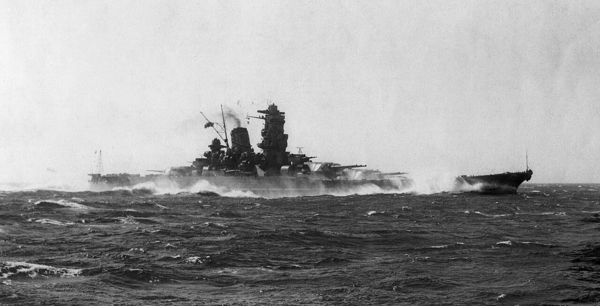

Yamato
El acorazado superpesado más grande jamás construido, armado con cañones de 460 mm, hundido durante la Operación Ten-Go en 1945.

Diseño y construcción
Construido en Kure, montaba nueve cañones de 460 mm en tres torres. Entró en servicio en diciembre de 1941.
Trayectoria operativa
Actuó como buque insignia y participó en movimientos de la Flota Combinada. Su historial incluye periodos de entrenamiento, desplazamientos y reparaciones.
Última operación
La salida hacia Okinawa terminó el 7 de abril de 1945. Los ataques aéreos estadounidenses hundieron el Yamato y varias de sus escoltas.
Diseño y doctrina
La clase Yamato se concibió alrededor de una batería principal de extraordinario calibre y una protección destinada al combate contra otras unidades pesadas. Ese diseño respondía a la expectativa de una confrontación decisiva entre flotas. El aumento de peso dedicado a protección y armamento tenía implicaciones para los astilleros, los puertos y el mantenimiento, además de para las prestaciones del propio buque.
Vulnerabilidad y operación final
La operación Ten-Gō expuso al Yamato a ataques aéreos de una fuerza de portaviones. La protección concebida para intercambios artilleros no equivalía a inmunidad frente a bombas y torpedos. La pérdida del buque permite estudiar la diferencia entre resistencia estructural, defensa antiaérea y capacidad de una formación para disputar el control del aire.